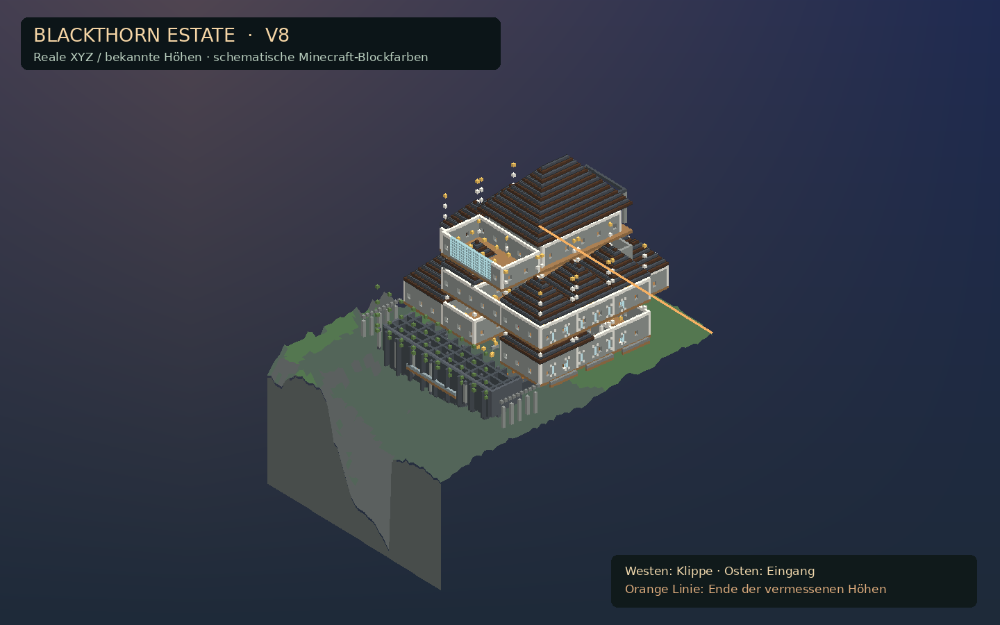
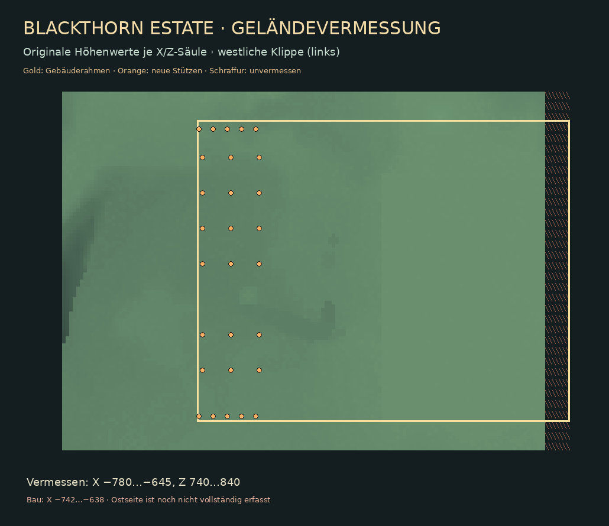

VICTORIAN GOTHIC · CLIFFSIDE MANOR
Blackthorn Estate
Ein Anwesen für sechs Spieler – mit begehbaren Kellern, Arbeitsbereichen, Privatflügeln und einem präzisen Bauatlas, der jede geplante Position einzeln aufführt.
Ansicht im Gelände
Terrain-basiert
Geländevorschau mit Geländegrenzen und Stützpfeilern. Östlich von X = −645 fehlen Messwerte. Minecraft-Texturen und tatsächliche Gebäudedetails können abweichen.
Projektstatus
HauptebeneY = 129
UntergeschosseY = 117 · 105 · 93
Wohnen6 private Bereiche
Lager18 beschriftete Funktionszonen
Viewer3D + 2D + Block-IDs + Hover
SurvivalSchrittfolge pro Höhe
Die Koordinaten sind real und eindeutig. Der Bau wurde noch nicht vollständig in Minecraft auf Laufwege, Kopffreiheit und Blockstates getestet.
VOXEL VIEWER
3D-Ansicht
Auf jede Blockfläche zeigen → Nummer, Material und X/Y/Z. Klicken → auswählen. Bei näherem Zoom lassen sich Nummern einblenden.
… sichtbar
Ziehen: drehen · Shift/Rechtsziehen: verschieben · Rad: zoomen · Hover: genaue Block-ID · Einzellayer für präzise Nummern
Aktive Bauhöhe
Y = 129Tipp: „Nur eine Y-Höhe“ zeigt alle Blöcke genau auf derselben Bauhöhe. In der Bauanleitung sind diese zusätzlich nummeriert.
Blockinspektor
Bewege die Maus über einen Block oder wähle ihn im Grundriss / in der Bauanleitung.
BLOCKGENAUER GRUNDRISS
2D-Layerplan
Jede farbige Rasterzelle ist ein Minecraft-Block. Ab einer ausreichenden Zoomstufe steht die eindeutige Blocknummer direkt darauf.
Rad: zoomen · Rechts-/Shift-Ziehen: Karte verschieben · Zeigen: Blocknummer und Koordinaten · Klick: auswählen
Noch kein Block gewählt.
SURVIVAL-BAUANLEITUNG
Schritt für Schritt
Erst Y-Höhe auswählen, dann die Blöcke in nummerierter Reihenfolge setzen. Jede Zeile enthält die genaue Position und den Materialnamen.
0 %
Bauhöhe & Reihenfolge
…
Bauschritte · Y=93
…
Fertig#Koordinaten / MaterialPhase
Nummern sind in der CSV identisch. Grüne Häkchen werden nur in diesem Browser gespeichert; der ZIP-Bauplan bleibt unverändert.
RAUMPROGRAMM & ORGANISATION
Lager, Werkstatt und Wohnen
Die Lagerfächer sind nach Nutzung getrennt. Klick auf eine Zone, um ihre Mitte im 2D-Plan zu öffnen.
18 Lagerzonen · 10 weitere Räume
So funktioniert die Lagerlogistik
Im obersten Keller befinden sich Alltagsbedarf, persönliche Lagerplätze, Speisekammer und Abgabe. Eine Ebene tiefer liegen Verarbeitung, Brauen, Verzauberung und Kartenarchiv. Ganz unten befindet sich das große Materiallager für seltene und massenhaft benötigte Blöcke.
Wichtig: Das Lager ist ein manuell sortiertes System. Eine automatische Redstone-Sortieranlage und tatsächlich beschriftete Minecraft-Schild-NBT-Daten sind noch nicht enthalten. Die Zonennamen sind auf der Website dokumentiert.
MATERIALLOGISTIK
Material- und Blocklisten
Türen, Betten und Schilder werden mit ihrer tatsächlichen Item-Anzahl und Stackgröße gerechnet. Wasser braucht wiederverwendbare Eimer statt 144 Inventar-Blöcken.
| Material | Minecraft-ID | Positionen / Items | Logistik |
|---|
Blockregister
Die ersten Treffer werden angezeigt.
| # | X | Y | Z | Material | Baugruppe |
|---|
GELÄNDE & SILHOUETTE
So liegt das Haus in der Umgebung
Der westliche Hang fällt steil ab, während der östliche Bereich das Plateau und die Zufahrt bildet.
Atmosphäre und Architekturziel

Künstlerische Zielillustration, nicht blockgenau.
Blockmodell im vermessenen Gelände (V8)
Render aus tatsächlichen Blueprint-Koordinaten und bekannten Geländehöhen. Der östliche Baugeländebereich wurde nicht mit erfundenen Höhen ergänzt. Kein Screenshot aus Minecraft: Materialtexturen und komplexe Blockformen sind angenähert.
Vermessungskarte (V8)

1 Zelle = ein X/Z-Block. Gold: Bauumriss. Orange: geländebasierte Stützen. Die östlichen Höhen sind nicht vermessen.
Originalhöhenkarte

Basis sind die zur Verfügung gestellten Region-Daten. Nicht alle Höhen außerhalb des untersuchten Bereichs sind bekannt.
Koordinaten
Seed−4815224116428668341
AnkerX −662 · Y 126 · Z 790
Fußboden HauptebeneY 129
KlippeWesten (−X)
EingangOsten (+X)